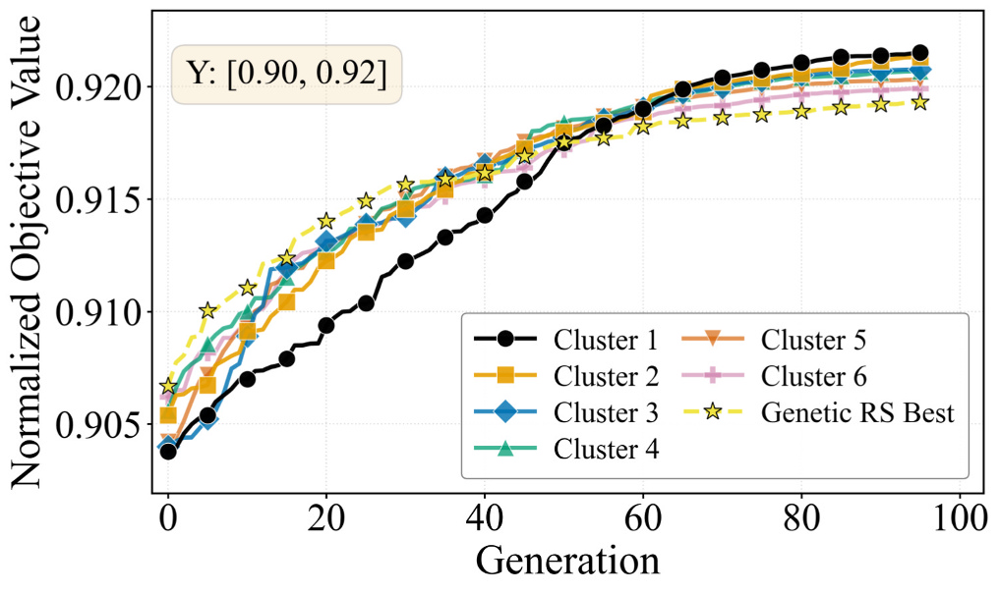
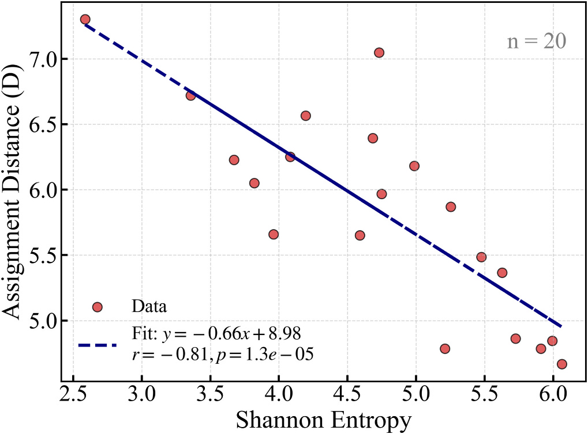

Beyond a single solution: Multimodal wind farm layout optimization via cluster annealing elite search
Chen, Y., Dong, Z., Zhang, D., Deng, X., Zhou, D., Zhou, Y., & Peng, Y. (2026). Applied Energy, 414, 127852. [URL]
Wind farm layout optimization (WFLO) plays a critical role in maximizing energy output under complex aerodynamic interactions. However, most existing approaches focus on finding a single global optimum, limiting flexibility in practical deployment. This work proposes a multimodal WFLO framework capable of generating multiple high-quality and structurally diverse layouts within a single optimization process. The method introduces a lineage-consistent evolutionary mechanism based on dynamic clustering and selective retention, enabling diversity preservation without compromising performance. Extensive experiments across five representative wind roses show that the resulting solutions not only surpass the baseline but also exhibit distinct spatial patterns. In addition, the study investigates the origins, energy/wake topology, and potential applications of the obtained layout diversity, while the algorithm also demonstrates strong robustness with performance variation typically within 0.5%. Overall, the framework provides an interpretable and robust strategy for exploring the multimodal nature of WFLO, offering greater design flexibility for real-world wind farm planning.

